Sketches from the Field
sketch an outline of a leaf (on the black), then click generate to grow your leaf ↓

field notes
What it takes to teach a machine a leaf.
I'm a creative who loves emerging technology and trying things before they're any good. Part of being experimental is knowing what each project calls for: sometimes it's a nicely crafted output (I love good craft!), other times it's a thoughtfully considered process. This project is more of the latter. Consider this my personal note from the field.
This project, an attempt to turn a leaf sketch into a generated leaf vein network, is built using pix2pix — a cGAN (conditional generative adversarial network). Here's what that means in practice: you feed it matched pairs (a sketch and its corresponding photo), it trains on them, and then it can take a new sketch and generate its best guess at the real thing. Thousands of pairs later, it can turn a simple sketch into a generated leaf.
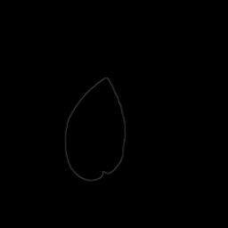
A · input →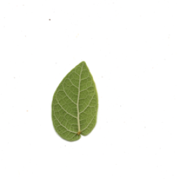
B · target → ? output (the guess) ↓This experiment started as an assignment in my Handmade Datasets class with SFPC, where the whole idea is to build your own data by hand instead of using someone else's — a way to really understand how data flows through a machine learning model. It was laborious, constrained, and fun.
Leaves in hand, I came into this project with a simple question: what does it take to teach a machine to see what we overlook? And what can teaching a machine, in turn, teach me about life around us?
Gathering data by hand.
Picking your dataset is the most important part of a project like this — good data creates good results. It's also easy to pick something with too many variables, making it impossible for a model to learn quickly. I chose to keep it simple: 300 leaves from one shrub type, taught to a small pix2pix model.
I'm a hobby ecologist, so I'm naturally drawn to the small. For this project, I chose to investigate the vein networks in a leaf — they're vital to life on earth and almost entirely unseen, similar to an ML model's own inputs. I chose the creeping fig (Ficus pumila) as my subject; a little vine that eats fences. It's invasive here in California, so harvesting hundreds of leaves to experiment and troubleshoot felt less harmful to the ecosystem.
Even the same leaf can have so much variance: some are fat and heart-shaped, some long and skinny, some red instead of dark green. I flattened them, laid them on the scanner glass a handful at a time, and scanned every single one before pressing them in a book. This took 10+ hours across many days. I came to appreciate what it takes to gather ML data.
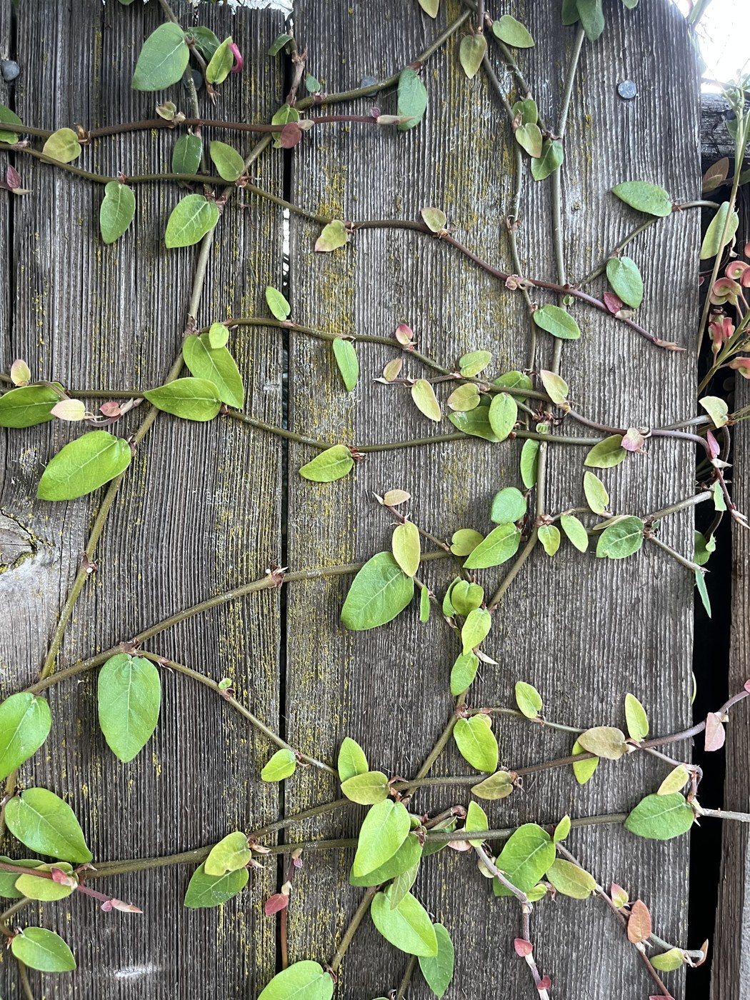
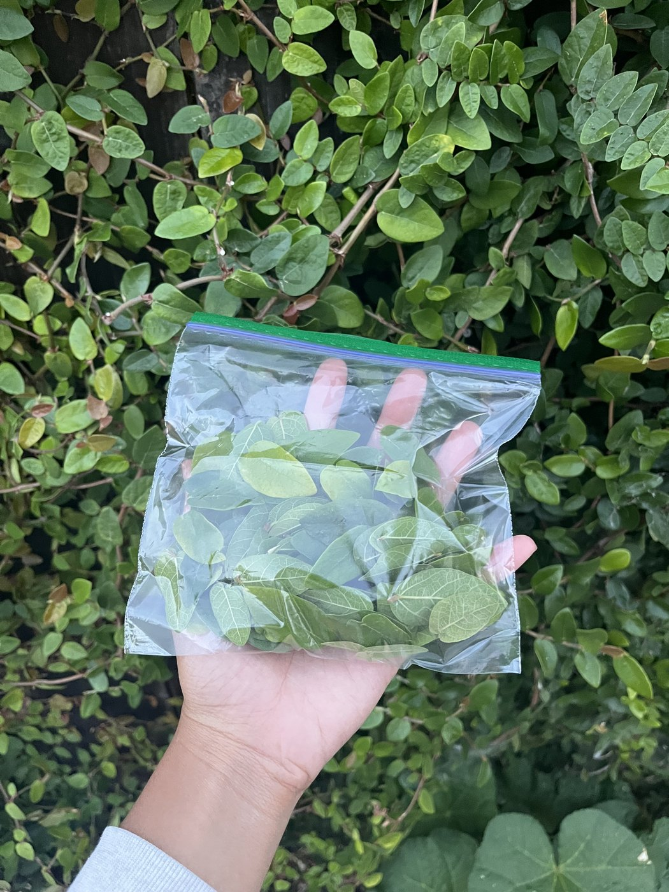
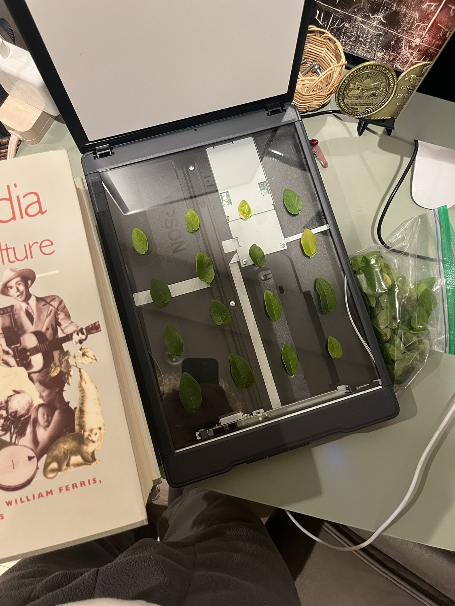
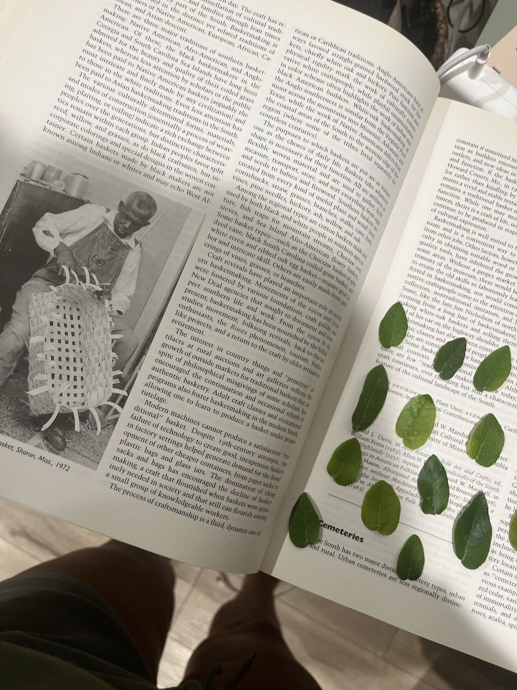
While working away, I reflected on the same lesson generative AI keeps teaching me: we obsess over the outputs and forget the inputs — the unglamorous structure it takes to make something beautiful, whether it's a leaf or a generated image. I think there's something important to learn from the things we deem small, uninteresting. I also realized the outputs aren't the only intelligent thing — so are the inputs. Nature sure is intelligent.
Preparing the data, training the model.
Gathering and scanning is only half of it — after that you still have to clean, crop, and grow the data. I augmented my 300 leaves into ~1,200 by flipping them horizontally and vertically, set up a Google Drive to hold it all, and got the training pipeline running.
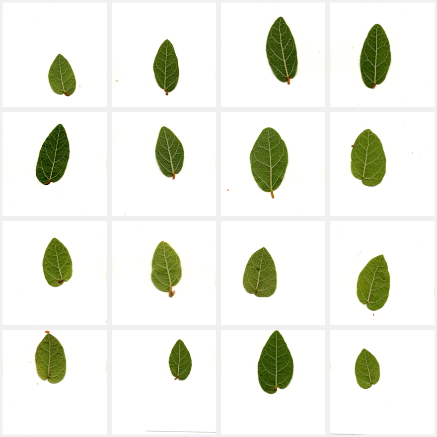
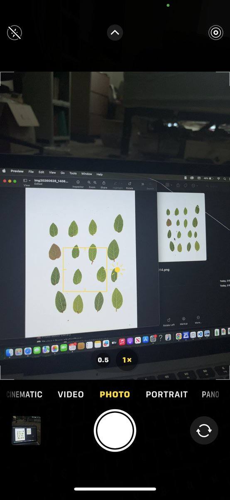
Then came the decisions that actually shape the model — and where I learned the most. Epochs: one full pass over all the data is one epoch; I set a max of 200. Learning rate: how big a step the model takes each time it corrects itself — too high and it overshoots and never settles, too low and it barely learns. I used 0.0001, the standard pix2pix default, because a small single-subject dataset like mine destabilizes easily, and a gentle rate keeps training steady. Save frequency (100): saves the model itself — checkpoints, the trained weights you can load and use later. Display frequency (500): saves preview images every 500 steps — the input / guess / target triplets — so you can literally watch it learning (this was my favorite part!).
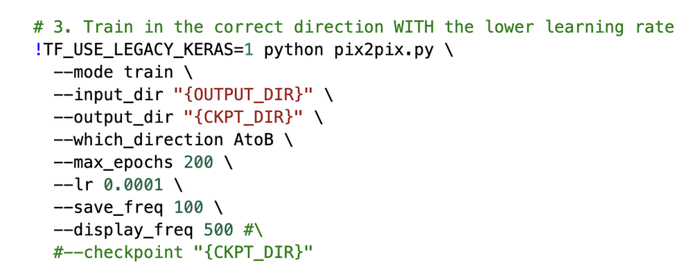
And then you wait. The logs tick past — discriminator loss, generator GAN loss, L1 loss — three numbers flashing across the screen for hours. Checkpoint by checkpoint, a blurry leaf starts to appear and take form.
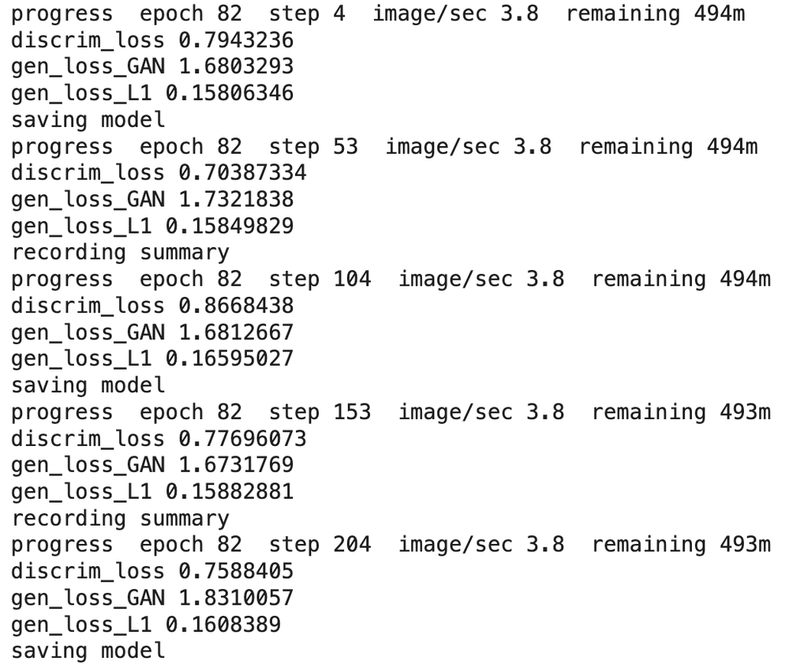
It kind of looks like shit. Here's what I see anyway.
The honest middle: the outline it was given, the leaf it generated, and the real one it reached for. Smeary, dithered, a little haunted looking (why is AI so uncanny?!)... but look closer: it learned green in the middle, pale at the vein, darker at the edge. It started trying to figure out veins, chaotically. But now a blank network has a small opinion about leaves.
The model came away with a small opinion about leaves. I came away understanding what it actually takes to build one that can — the cost of a dataset, the demands of a model, and the complexity of even the smallest things. I'm excited to keep iterating.
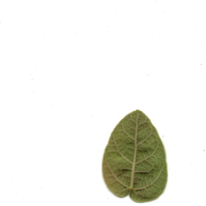
real leaf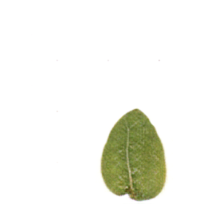
it guessedCan a machine learn a vein, then dream a new one?
That was the real question. Veins are unseen, we don't think about them, but they hold up the whole leaf, and the leaf holds up the ecosystem, and the air we breathe. It felt like a fitting thing to ask a model to learn: the intimate, structural, easy-to-overlook parts. It reminds me of the overlooked dataset driving the models we love to use. Watching it train, checkpoint by checkpoint, a hundred images at a time, I understood ML differently. The output isn't the point. The inputs are — the data, the pipeline, the thousand small decisions. That labor is the real star here; whether you're building these models, or maintaining them, they're made by many hands.
What artists have been saying for so long is true: the purpose is the process, and the labor is the art.
So maybe it hasn't quite imagined new veins yet — or answered the biggest questions of the plant universe — but I do have ideas for the next pass. What's another epoch anyway?
open questions
- What does it actually take to watch a model learn over time?
- How do machines struggle with the intimate parts of experience — the branch of a vein, a thing that feels rather than resolves?
- Can ML be a tool for thinking about how we create with it, not just a tool for making?
next pass
- Put the veins into dataset A, not just the outline.
- Train it longer — it's probably a little undertrained.
- Try flowers next. Something with more color.
- Make a film or animation of the model learning.
This html demo of pix2pix is slightly modified from Dongphil Yoo's pix2pix-ml5-demo